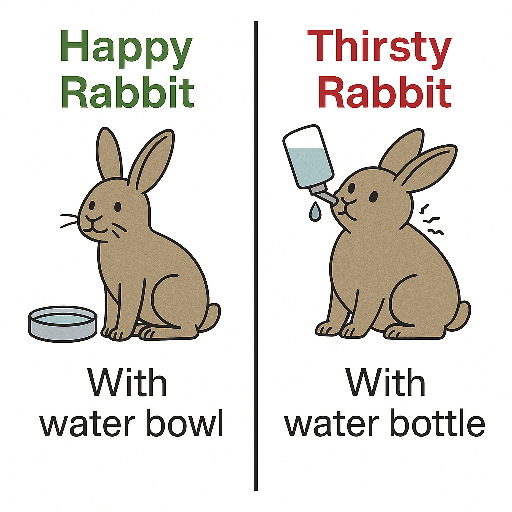
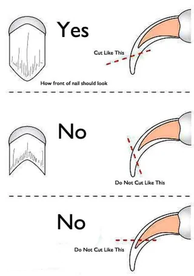

A domestic rabbit should primarily eat hay, which should make up about 80% of their diet. Fresh vegetables,
including leafy greens, should account for about 10% of their diet. It's important to offer a variety of vegetables,
such as spinach, kale, and celery, but carrots should be given sparingly as they are high in sugar and can be harmful
in excess.

A domestic rabbit needs to have a water bowl with water at room temperature to stay hydrated. Having a rodent water bottle not ownly deprives them of sufficent water but also can cause damages to their neck.

Trimming nails wrong can lead to cracked nails and bleeding. If you have troubles seeing the blood vessels in the nail try to use a bright flashlight.